2.1 Distance and Displacement
When you came to school today, you probably travelled along different roads and changed direction many times. Distance is the length of the path you travelled from start to finish.
Displacement is how far you are from your starting point measured in a straight line, or the change in your position. It is a very important idea in physics: we use it to find velocity and acceleration, and it matters in more advanced ideas like energy conservation.
Both distance and displacement are measured in metres (m). But in motion it matters whether you walk north or south. So displacement needs a direction as well as a size (magnitude).
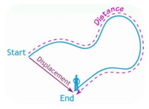
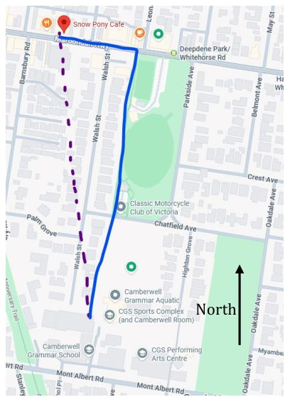
Displacement can be negative if the change in position is in the opposite direction.
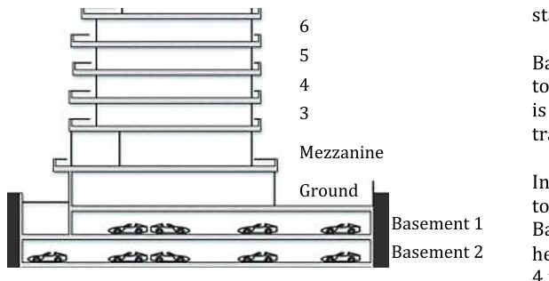
Exercise 2.1
A diagram may help you to visualise each of these questions.
Jack threw a tennis ball due north for his dog, Sam. Sam ran 45 m to get the ball, and then returned to Jack.
- What distance did Sam run? m
- What was Sam's displacement when he returned to Jack? m
Jack threw the ball 45 m again in the same direction. Sam ran after it, but saw another dog and kept running for another 100 m beyond the ball. Including the initial run:
- What total distance did he run now? m
- What was his final displacement? m
- 90 m (first run) + 45 + 100 = 235 m. d. He ends 45 + 100 = 145 m north of Jack.
During a game of rounders, James ran 20 m to first base. The four bases form a square.
- At first base, what was the size of James's displacement? m
- James makes another run, this time to third base. What is the size of his displacement from the start now? m
Third base is one side of the square away from home base, so he is 20 m from the start.
Marty jogged once around the JTO during PE. The "oval" is 75 m long and 45 m wide.
- What distance did Marty jog? m
- What was the size of his final displacement? m
- His teacher encouraged him to go further: a short side, a long side, and one more short side. How far from his starting point is he now? m
- 75 + 45 + 75 + 45 = 240 m. c. After short, long, short, he is on the opposite corner along the long side: 75 m from the start.
During a training ride, a cyclist rides 50 km east and then 30 km west.
- What distance does the cyclist travel? km
- What is the cyclist's displacement at the end of the ride? km
Jeff runs one shorter length (45 m) and one longer length (75 m) of the rectangular JTO field. Calculate the magnitude of his displacement. (You won't be asked this in a test.)
Using Pythagoras: √(452 + 752) = √(2025 + 5625) = √7650 ≈ 87.5 m.
2.2 Speed and Velocity
In a moving car, you can judge how fast you're going by watching stationary objects like signposts go past. Speed describes the rate at which an object travels: how far it goes in a given time. A truck travelling at 100 km/h covers 100 km in 1 hour, or 300 km in 3 hours. The Victorian speed limit is 110 km/h on highways and freeways and 50 km/h in suburban streets.
A cyclist probably doesn't keep a constant speed for a whole journey: they may stop, or go faster downhill. So this calculation gives an average speed, which doesn't tell us the speed at any particular moment. A car's speedometer shows the speed at each instant: the instantaneous speed.
Velocity
Toss a ball into the air. What do you notice about its motion?
Physicists use velocity to describe both how fast an object is moving and its direction (up, down, left, right, or north, south, east, west). Often one direction is chosen as positive, so the opposite direction is negative. A ball tossed upwards has a positive velocity going up; it slows, stops momentarily, then falls with a negative velocity.
Δ means "change in": final value − initial value.
Units of speed and velocity
In Australia, a car's speedometer shows km/h. In the laboratory we use metres per second (m/s).
| Type of motion | Speed in km/h | Speed in m/s |
|---|---|---|
| Walking pace | 2 – 4 | 0.6 – 1.1 |
| Running pace | 5 – 20 | 1.4 – 5.6 |
| Flying bird | 30 – 60 | 8.3 – 16.7 |
| Car on a road | 60 | 16.7 |
| Jet plane | 1000 | 278 |
| Speed of sound | 1190 – 1220 | 330 – 340 |
| Speed of light | 1.08 × 109 | 3.0 × 108 |
In 2009, Usain Bolt broke the 100 m world record with a time of 9.58 s. What was his average speed for the race?
s = d ÷ t = 100 ÷ 9.58 = 10.4 m/s.
What was this speed in km/h?
10.44 × 3.6 = 37.6 km/h.
In a different event, Usain ran at an average speed of 10.42 m/s for 19.19 s. How long was this event?
d = s × t = 10.42 × 19.19 ≈ 200 m.
Usain ran the 400 m at an average speed of 8.83 m/s. What was his time?
t = d ÷ s = 400 ÷ 8.83 = 45.3 s.
Exercise 2.2
A standard test for new cars is to time how long they take to travel 400 m from a standing start. Because they start at rest and accelerate, the speed calculated is an average speed. If a car speeds up at a constant rate, its final speed is twice its average speed.
Complete the table. Give answers to 1 decimal place (answers within 5% are accepted).
| Vehicle | Time to travel 400 m (s) | Average speed (m/s) | Average speed (km/h) | Final speed (m/s) | Final speed (km/h) |
|---|---|---|---|---|---|
| Volvo XC60 | 15.3 | ||||
| Subaru Forester | 16.5 | ||||
| Lexus RX350 | 18.6 | ||||
| Tesla Model 3 | 10.6 |
Volvo: 400 ÷ 15.3 = 26.1 m/s; × 3.6 = 94.1 km/h; final speed = 2 × 26.1 = 52.3 m/s = 188.2 km/h.
- Two things are needed to measure the speed of an object: and .
- An object travelling at constant speed must travel the same in the same time.
- To convert km/h to m/s we the number by 3.6.
- The average speed of an object is the distance divided by the .
- Speed can be measured in or .
| Distance travelled | Time taken | Speed (km/h) | Speed (m/s) |
|---|---|---|---|
| 120 km | 3 h | ||
| km | 0.50 h | 90 | |
| km | 1.50 h | 30 | |
| 450 km | h | 20 | |
| 18 km | h | 5.0 |
Convert m/s to km/h by × 3.6 first (e.g. 30 m/s = 108 km/h), then use d = s × t or t = d ÷ s.
A car travelled from Melbourne to Mildura, a distance of 470 km, in 6.0 hours. What was the average speed for the trip?
A 747 jet flies at 900 km/h. How long would it take to travel from Melbourne to Sydney, a distance of 1000 km?
t = d ÷ s = 1000 ÷ 900 = 1.11 h (about 1 hour 7 minutes).
A car travels for 2.0 h at an average speed of 80 km/h. The driver rests for 30 minutes, then travels 120 km to his destination in 1.5 h. Calculate his average speed for the whole journey.
Total distance = 80 × 2.0 + 120 = 280 km. Total time = 2.0 + 0.5 + 1.5 = 4.0 h (include the rest!). Average speed = 280 ÷ 4.0 = 70 km/h.
A humpback whale travels 18 km during a 3.0-hour trip without a break. In the first hour its average speed is 7.5 km/h. In the second leg of its journey (the remaining 2 hours) it travels km at an average speed of km/h.
Determine the average speed of a cyclist who travels east for 150 m in 20 seconds.
Would this be their speed for the whole journey? Why or why not?
No. At any time the cyclist could speed up or slow down (e.g. because of traffic lights), so at some stages they would be travelling faster or slower than the average.
The cyclist's average velocity is m/s .
A cyclist travels east for 150 m in 20 s, stops for 5 s, then rides west for 50 m in 5 s. Determine their average speed.
Total distance = 150 + 50 = 200 m; total time = 20 + 5 + 5 = 30 s. Average speed = 200 ÷ 30 = 6.7 m/s.
The cyclist's average velocity is m/s .
Displacement = 150 − 50 = 100 m east, in 30 s, so 100 ÷ 30 = 3.3 m/s east.
Prac 1: Speed and stopping distance for a bicycle
This activity is supervised by your teacher and involves the whole class.
Aim: to determine the relationship between the speed of a bicycle and the distance needed to stop it.
Equipment: 3 stopwatches, a bicycle, an 8 m tape measure, chalk, a handbrake restrainer. Caution: stand clear of the moving bike.
Procedure:
- Find the run-up space the bicycle needs to reach a constant speed.
- At the end of the run-up, draw two chalk lines 5 m apart, and extend the tape measure beyond the second line.
- Three timers time the rider over the 5 m between the lines, so the speed can be found. Record the three times and calculate an average.
- Use the same rider throughout. The rider practises keeping a constant speed approaching the first line.
- Fit a brake restrainer so the braking force is consistent, and the rider brakes when the front wheel crosses the second line.
- Measure the stopping distance from the second line to the front wheel.
- Start at walking pace and increase the speed a little each run, to get at least 6 different speeds and stopping distances.
Results table: measured times #1–#3 (s), average time (s), speed across 5 m (m/s), stopping distance (m).
The rider knows exactly when to brake in this experiment. In real life, a driver doesn't know when an emergency will happen. What factors may affect the stopping distance of a car?
The reaction time of the driver (affected by tiredness, distraction such as phones, alcohol or drugs), the speed of the car, the condition of the brakes and tyres, the road surface (wet, icy, gravel), whether the road slopes uphill or downhill, and the mass of the car (load).
Do your results show a consistent trend? Explain why it is difficult to get very accurate results in this experiment.
The results should show a general trend: stopping distance increases as speed increases. Accurate results are hard because of the timers' reaction times when starting and stopping the stopwatches over a short distance; the rider can't keep a perfectly constant speed; the braking force and the moment of braking vary slightly each time; and measuring exactly where the front wheel stops is imprecise.
Why do the instructions require the same person to ride the bike?
To keep the mass of the rider and bike constant (and the riding/braking technique the same), so that speed is the only variable changing. It is a controlled variable for a fair test.
Plot stopping distance (y-axis) against speed (x-axis). Describe the trend in your results and explain how it relates to car safety.
Stopping distance increases as speed increases, and it increases faster than in proportion (the curve gets steeper: doubling the speed roughly quadruples the braking distance). For car safety, this means a small increase in speed greatly increases the distance needed to stop, which is why speed limits are lower in suburbs and near schools.
2.3 Acceleration
When the driver presses the accelerator, the car speeds up and you feel pushed back into your seat. When the brakes are applied, the car slows down and you feel pushed towards the windscreen. Speeding up or slowing down is acceleration.
- An increase in speed is called acceleration (positive acceleration).
- A decrease in speed is called deceleration (negative acceleration).
- A stationary object usually has zero acceleration.
- An object moving at constant speed also has zero acceleration.
Acceleration only happens when a force acts on an object. A force in the direction of motion makes it speed up; a force in the opposite direction makes it slow down.
Acceleration is how much the velocity changes every second. Its unit is metres per second squared (m/s2). A car whose speed increases by 5.0 m/s every second is accelerating at 5.0 m/s2.
A gymnast accelerates down the runway from rest (0 m/s) to a top speed of 8 m/s with an acceleration of 3 m/s2. Over what time has he accelerated?
t = Δv ÷ a = 8 ÷ 3 = 2.7 s.
A car decelerates at 5 m/s2 for 3 seconds.
- The size of the car's change in velocity is m/s.
- If it was initially travelling at 20 m/s, its final velocity is m/s.
Exercise 2.3
- If an object is travelling faster and faster it is said to be .
- If a car is moving at constant speed its acceleration is m/s2.
- A truck speeding up by 2 m/s each second has an acceleration of m/s2.
- An object that is reducing in speed is said to be .
- The sign of acceleration when an object is slowing down is .
- Acceleration is measured in .
- Negative acceleration is also known as .
- An object slows down when a force acts in the direction to its motion.
Acceleration units aren't limited to m/s2. Since acceleration is a change in speed per unit of time, units like km/h2 are possible, but they are awkward, so we usually use m/s2.
Find the acceleration of a semi-trailer that goes from rest to a speed of 20 m/s in 16 seconds.
A lunar space vehicle changes its speed from 4000 m/s to 5000 m/s in 45 minutes. Calculate its acceleration. (Convert minutes to seconds first.)
45 min = 2700 s. a = (5000 − 4000) ÷ 2700 = 0.37 m/s2.
A bicycle accelerates at 2.0 m/s2 from rest. How fast is it moving after 8.0 seconds?
A tram driver brakes when approaching traffic lights at 15 m/s and takes 4 s to stop. What was the tram's average acceleration?
a = (0 − 15) ÷ 4 = −3.75 m/s2 (negative because it is slowing down).
A cheetah spots its prey and changes its speed from 15 m/s to 28 m/s in 8 s. Calculate its acceleration.
2.4 Measuring motion
In Prac 1 you used a tape measure and stopwatches to find the average speed of a bicycle over 5 m. There are many other ways to measure the distance an object travels and the time it takes.
- A flashing strobe light creates multiple images of a moving object, like the ball in Figure 1. Measuring the distance between images and knowing the time between flashes lets you find the average speed at different points of the ball's fall.
- Sports scientists use multiple exposures or microwave sensors to track an athlete's position on the track.
- Modern data loggers and photogates can measure velocities directly.
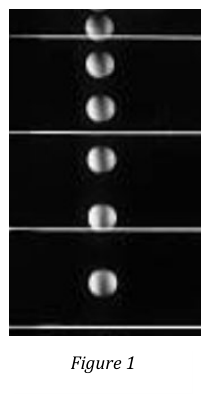
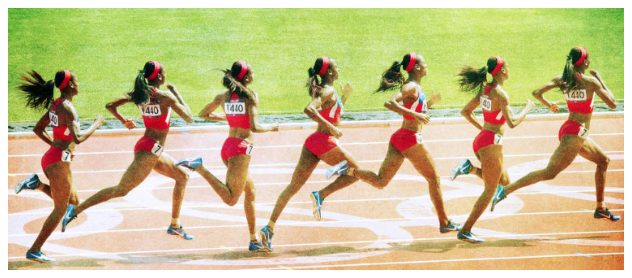
2.5 Displacement–time graphs
A common way to show the motion of an object is a graph of displacement against time.
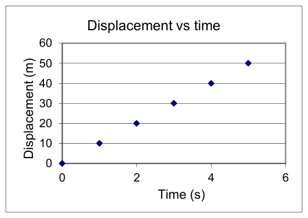
Displacement–time graphs show an object's displacement from its starting position as time passes:
- You can read how far the object is from its starting point at any time.
- The direction of the line shows the direction of movement (forwards/backwards, north/south).
- The gradient of the line shows how fast the movement is. A very steep line means fast movement.
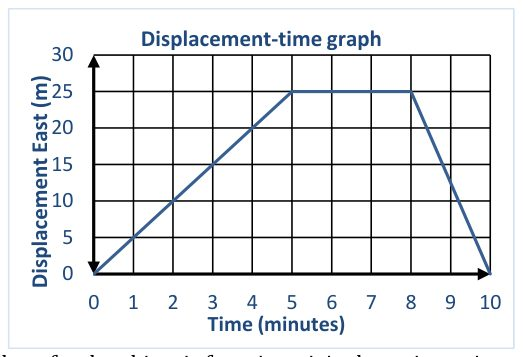
Using the graph above:
- Which section shows the object moving away from its starting position (moving east)?
- Which section shows it returning to its starting position (moving west)?
- Can you tell if the object is moving quickly or slowly from this graph? How?
- Which section shows the object stationary?
- From 0 to 5 minutes: the line slopes upwards (displacement east increases).
- From 8 to 10 minutes: the line slopes downwards back to zero.
- Yes: from the gradient. A steeper line means faster movement. The return trip (8–10 min) is steeper than the outward trip, so it is faster.
- From 5 to 8 minutes: the line is horizontal.
The shape of displacement–time graphs
- A straight line means constant speed (including when stationary).
- A positive gradient (upward slope) means forward motion.
- A zero gradient (horizontal line) means the object is stationary.
- The graph curves upward if the object is accelerating.
- A positive gradient that curves towards horizontal means the object is slowing down to a stop.
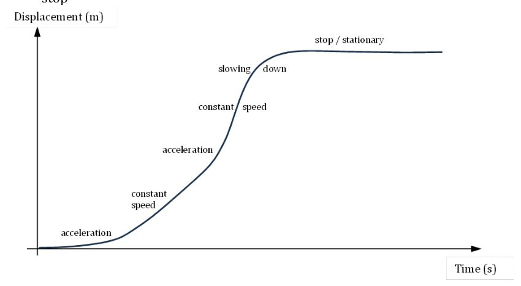
The negative gradient
A ball thrown upwards rises, slows down, stops, then falls back to its starting point. Its displacement–time graph is a parabola. At t = 5.0 s the ball is at its highest point; after this, the gradient is negative. Since the gradient is the velocity, a negative gradient means the object is travelling in the opposite direction. As the ball speeds up on the way down, the gradient becomes more and more negative.
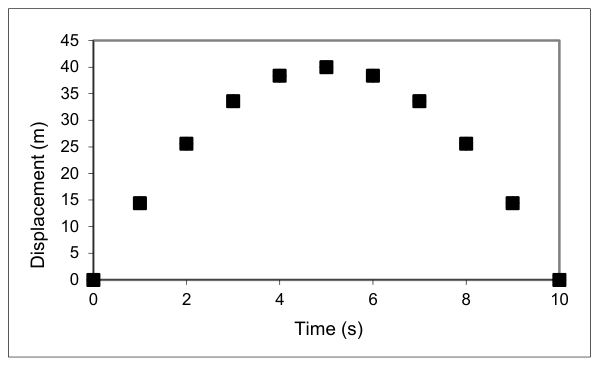
Exercise 2.5
- A straight line sloping upwards on a displacement–time graph indicates constant .
- A horizontal line on a displacement–time graph indicates that the object is .
- The steeper the gradient on a displacement–time graph, the the object's velocity.
- The gradient of the displacement–time graph is a measure of the of an object.
- A curved line sloping upwards (getting steeper) indicates that the object is .
Plot a displacement–time graph of the motion of a remote-controlled racing car:
| Time (s) | 0 | 1 | 2 | 3 | 4 | 5 | 6 | 7 | 8 | 9 | 10 | 11 | 12 |
|---|---|---|---|---|---|---|---|---|---|---|---|---|---|
| Distance (m) | 0 | 1.5 | 3 | 4.5 | 6 | 6 | 8 | 10 | 10 | 13 | 16 | 19 | 19 |
- The car was stopped between t = s and s, between t = s and s, and between t = s and s.
- The car was travelling fastest between t = s and t = s.
- It was travelling slowest (but not stopped) between t = s and t = s.
The fastest section has the steepest gradient (3 m each second, from 8 s to 11 s). The slowest moving section is 1.5 m each second, from 0 s to 4 s.
Describe the motion shown by each displacement–time graph.
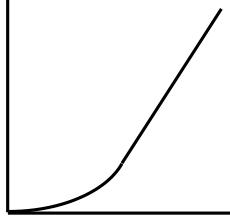
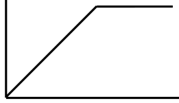
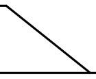
Graph A (left):
Graph B (middle):
Graph C (right):
2.6 Velocity–time graphs
A speedometer shows a vehicle's instantaneous speed. If readings are taken at regular intervals while the vehicle moves in a straight line, we can plot velocity against time.
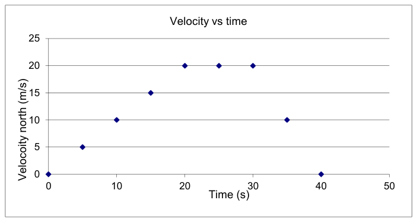
Summary of motion
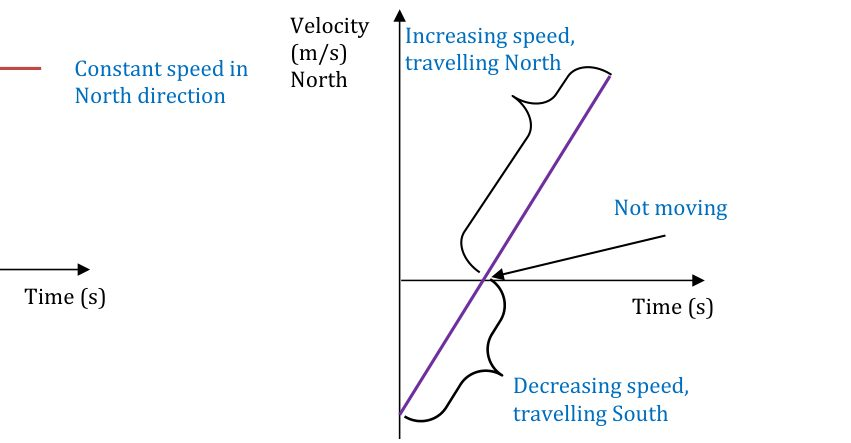
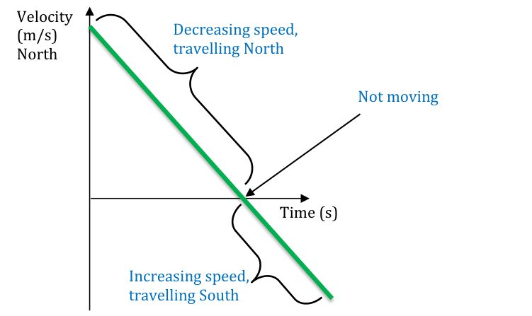
- A horizontal line above the axis: constant speed north.
- A line sloping up from zero: increasing speed, travelling north.
- A line sloping down towards zero (above the axis): decreasing speed, travelling north.
- Below the axis, the object is travelling south.
- On the time axis (velocity = 0): not moving.
The area under a velocity–time graph
Since displacement = velocity × time (x = v × t), the area under a velocity–time graph gives the displacement.
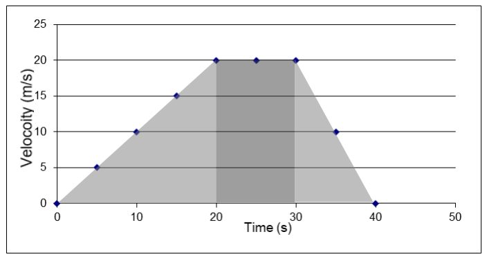
| Time interval | Shape and area formula | Area | Distance (m) |
|---|---|---|---|
| 0 – 20 s | Triangle, A = ½bh | ½ × 20 × 20 | 200 |
| 20 – 30 s | Rectangle, A = lw | 10 × 20 | 200 |
| 30 – 40 s | Triangle, A = ½bh | ½ × 10 × 20 | 100 |
| Total | 500 |
Exercise 2.6
On a velocity–time graph:
- A straight line sloping upwards indicates .
- A horizontal line indicates .
- A straight line sloping downwards suggests .
- The area under the line gives the .
- The gradient gives the .
6. Plot a velocity–time graph
| Time (s) | 0 | 10 | 20 | 30 | 40 | 50 | 60 | 70 | 80 | 90 | 100 | 110 | 120 |
|---|---|---|---|---|---|---|---|---|---|---|---|---|---|
| Velocity (m/s) | 0 | 5 | 10 | 15 | 25 | 35 | 45 | 45 | 40 | 35 | 30 | 15 | 0 |
- t = 35 s: m/s
ii. t = 65 s: m/s
iii. t = 85 s: m/s
iv. t = 105 s: m/s
Read halfway between the neighbouring data points, e.g. at 35 s it is halfway between 15 and 25 m/s.
- t = 15 s: m/s2
ii. t = 50 s: m/s2
iii. t = 65 s: m/s2
iv. t = 110 s: m/s2
Use the gradient of the section containing each time, e.g. 0–30 s: 15 ÷ 30 = 0.5 m/s2; 100–120 s: (0 − 30) ÷ 20 = −1.5 m/s2.
- The car was travelling at constant velocity between t = s and t = s.
- The total distance driven by the car was m.
Add up the areas under the graph (triangles, rectangles and trapeziums) for each section.
7. Velocity–time graph questions
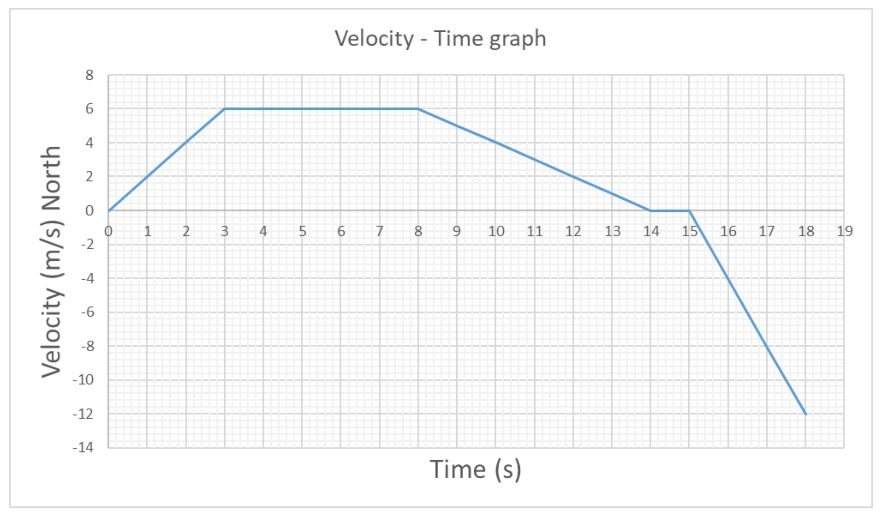
- 0 – 3 s: m/s2
ii. 3 – 8 s: m/s2
iii. 8 – 14 s: m/s2
iv. 15 – 18 s: m/s2
- Which other time section shows no acceleration?
- Which sections show an acceleration in the south direction?
2.7 The ticker timer
A ticker timer contains an electromagnet. When connected to an AC (alternating current) supply, it pulls a steel striker up and down, which hits a carbon paper disc and marks a dot on the paper ticker tape underneath. The Australian AC supply oscillates at 50 Hz (50 cycles per second), so the timer makes 50 dots every second.
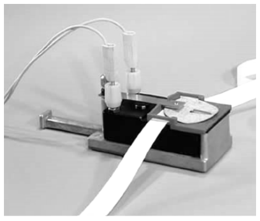
If the ticker tape is attached to a moving object, it is dragged through the timer, leaving dots 1/50 s = 0.02 s apart. The faster the tape moves, the further apart the dots.
Each gap between dots shows how far the object moved in 0.02 s, so it represents the object's velocity. For example, if each gap is 1 cm, the object is moving at a constant 1 cm ÷ 0.02 s = 50 cm/s (0.5 m/s).
If each gap is cut out and laid side by side in order, the strips form a velocity–time graph:
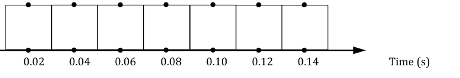
If the gaps get shorter, the object is slowing down:
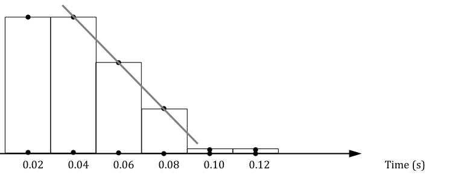
The gradient of this graph is the acceleration: a = (50 − 150) ÷ (0.08 − 0.04) = −2500 cm/s2, or −25 m/s2.
Analysing every single 0.02 s gap is time consuming, so physicists often analyse every 5 intervals, since 5 × 0.02 s = 0.1 s. In the example below, the 5-interval strips give velocities of 14.4, 33.1 and 47.5 cm/s at 0.1, 0.2 and 0.3 s. The acceleration is the gradient: a = (48 − 14) ÷ (0.3 − 0.1) = 170 cm/s2, or 1.7 m/s2.
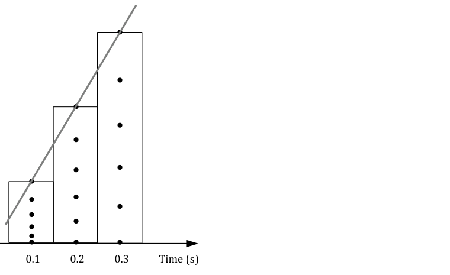
Exercise 2.7
- A ticker timer must be connected to .
- The Australian standard electrical supply has a frequency of Hz.
- The time interval between dots on a ticker tape is therefore s.
- In the United States the supply is 60 Hz. The time interval between dots on a ticker tape there is s.
- 1 ÷ 60 = 0.0167 s.
A length of ticker tape is obtained from an experiment at CGS. a. Measure the length of each of the 15 intervals and calculate the velocity in each interval. b. Recalculate the data as 5-interval data. c. Plot both data sets on the same axes.
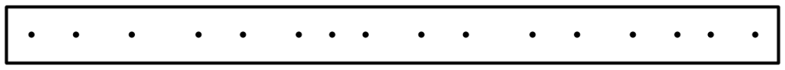
Answers vary slightly depending on your measurements. For each interval, velocity = length ÷ 0.02 s, e.g. a 1.0 cm gap gives 1.0 cm ÷ 0.02 s = 50 cm/s = 0.5 m/s; a 1.25 cm gap gives 0.63 m/s; a 0.75 cm gap gives 0.38 m/s. The cumulative time column goes 0.02, 0.04, 0.06 … 0.30 s.
For 5-interval data, each section is 5 gaps (0.1 s). Each 5-gap section measures about 5.0 cm, giving 5.0 cm ÷ 0.1 s = 0.5 m/s, at cumulative times 0.1, 0.2 and 0.3 s.
The single-interval velocities scatter around 0.5 m/s, while the 5-interval values are all about 0.5 m/s: the object was moving at roughly constant velocity, and averaging over 5 intervals smooths out measurement error.
Prac 2: Using a ticker timer to find the acceleration of a cart down a ramp
Aim: to collect and analyse ticker tape data for a cart accelerating down a ramp.
Equipment: ticker timer, 1.0 m of paper ticker tape, ruler, AC power pack, adhesive tape, ramp.
Procedure:
- Prop up a ramp at a slight incline on a student chair, with the ticker timer at the top, connected to the AC terminals of the power pack.
- Attach 1.0 m of ticker tape to the back of the cart and feed the other end through the timer, under the carbon paper.
- Hold the cart stationary at the top of the ramp, turn on the power pack, then release the cart.
- Check that the gaps between dots increase (showing acceleration). Repeat for each group member.
Analysis:
- Find a clear dot near the start of the tape and mark it as the first dot.
- Mark every 5 intervals (each 5-interval section is 0.10 s).
- Measure each section and record it in a table (time interval, cumulative time 0.1 to 1.2 s, interval length, velocity, acceleration).
- Velocity = interval length ÷ time interval.
- Estimate the acceleration from adjacent rows: a = (vn+1 − vn) ÷ time interval, and average all values.
- Plot velocity against cumulative time and draw a line of best fit. Its gradient is the acceleration.
- How should the acceleration from the gradient of the line of best fit compare with the average acceleration calculated from the table? 9. What does the triangular area under the line of best fit represent? 10. How should it compare with the total tape length?
- They should be similar. The line of best fit averages out random measurement errors, so the gradient is usually a more reliable value than the average of individual calculations, which can vary a lot.
- The area under a velocity–time graph is the distance travelled by the cart.
- It should be approximately equal to the total length of the measured tape, since the tape length is the distance the cart moved. Small differences come from measurement errors and the line of best fit not passing exactly through every point.
Retrieval activity 1: Brain dump!
Retrieval practice is the act of forcing information out of your brain. Think of your brain like a forest: the first time you learn something, it's like a faint path through the grass. Re-reading is just looking at the path, but every time you retrieve the information (test yourself), you walk the path. The more you walk it, the wider and clearer it becomes, until it is a highway that is nearly impossible to forget in an exam.
Your task: write down as much as you can remember about motion: definitions, diagrams, equations, examples, anything!
- You have 5 minutes, so work fast.
- No resources and no talking: this is an individual, silent task.
- When time is up, share with a partner for 3 minutes each.
- Then take 4 minutes to add your partner's information to your page in a different colour.